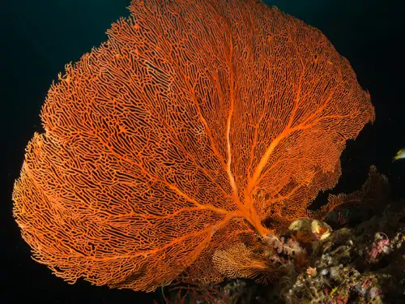
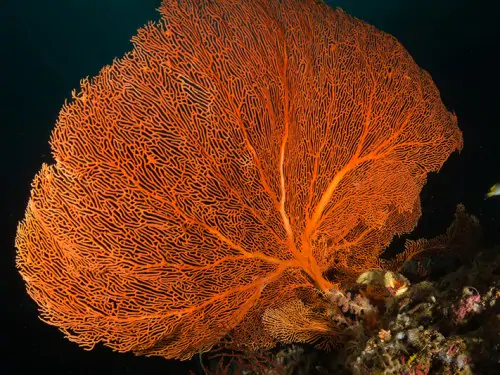

Explore Bali
Also known as the Land of the Gods, Bali appeals through its sheer natural beauty of looming volcanoes and lush terraced rice fields that exude peace and serenity. It is also famous for surfers’ paradise! Bali enchants with its dramatic dances and colorful ceremonies, its arts, and crafts, to its luxurious beach resorts and exciting nightlife. And everywhere, you will find intricately carved temples.

Explore Raja Ampat
Far from the view-blocking skyscrapers, dense and hectic concrete jungles, congested traffics, flickering electric billboards, endless annoying noises, and all the nuisances of modern cities, you will find a pristine paradise where Mother Nature and warm friendly people welcome you with all the exceptional wonders in Raja Ampat, the islands-regency in West Papua Province. With all the spectacular wonders above and beyond its waters, as well as on land and amidst the thick jungles, this is truly the place where words such as beautiful, enchanting, magnificent, and fascinating get its true physical meaning.
 
